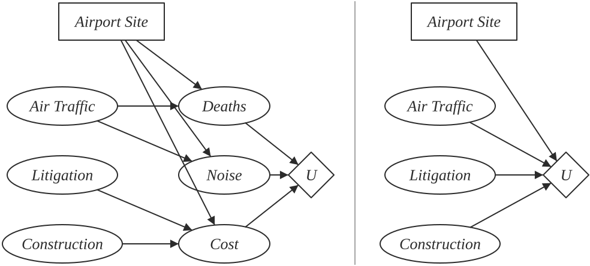
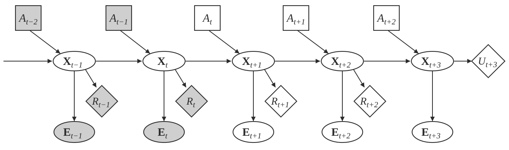
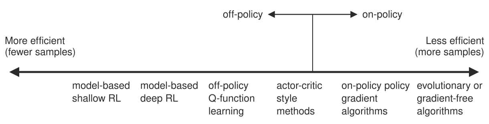

RL and decisions#
Some notes on decision theory based on Berkeley's CS 188 course and "Artificial Intelligence" Russel & Norvig 3rd Edition
About this chapter
The chapter goes from one decision to many. Game trees cover adversarial search with minimax and alpha-beta pruning. Decision theory then says how a rational agent picks a single action: maximize expected utility, where the utility function follows from a few axioms about preferences, and information is worth gathering when it might change the plan.
Markov decision processes chain these decisions over time. Value iteration and policy iteration solve an MDP when the transition model \(P(s' \vert s, a)\) and the reward \(R(s)\) are known, and POMDPs add uncertainty about the state. Reinforcement learning drops the known model and learns from observed rewards, with TD learning, Q-learning or policy search. The last sections are notes from Sergey Levine’s deep RL course and on training LLMs with RL (PPO, DPO, GRPO, on-policy distillation).
Chapter outline: 6 sections
- Game trees - Russell & Norvig 5.2-5.51 interactiveMinimax backs values up a game tree: each player picks the move that is best for them, assuming the opponent does the same.
- Decision theory / VPI -- Russell & Norvig 16.5 & 16.61 figureA decision network adds decision nodes and a utility node to a Bayesian network.
- MDPs and rl - Russell & Norvig 17.1-17.41 interactive1 figureAn MDP fixes states, actions, a transition model P(s' \vert s,a) and a reward R(s).
- Reinforcement learning -- Russell & Norvig 21.1-21.61 interactiveNow the agent does not know P(s' \vert s, a) or R(s).
- Deep rl course1 figure
- RL for LLMsHere the policy is a language model.
Means–ends analysis - for planning subgoals, use the distance-to-the-goal as a continuous reward signal (and basically do greedy search with backtracking)
at test-time, we solve an optimization problem
Game trees - Russell & Norvig 5.2-5.5#
Minimax backs values up a game tree: each player picks the move that is best for them, assuming the opponent does the same. The rest of the section is about making that affordable: pruning, cutting the search off with a heuristic evaluation, and handling chance nodes.
like search (adversarial search)
minimax algorithm
ply - half a move in a tree
for multiplayer, the backed-up value of a node n is the vector of the successor state with the highest value for the player choosing at n
time complexity - \(O(b^m)\)
space complexity - \(O(bm)\) or even \(O(m)\)
alpha-beta pruning cuts in half the exponential depth
once we have found out enough about n, we can prune it
depends on move-ordering
might want to explore best moves = killer moves first
transposition table can hash different movesets that are just transpositions of each other
imperfect real-time decisions
can evaluate nodes with a heuristic and cutoff before reaching goal
heuristic uses features
want quiescent search - consider if something dramatic will happen in the next ply
horizon effect - a position is bad but isn’t apparent for a few moves
singular extension - allow searching for certain specific moves that are always good at deeper depths
forward pruning - ignore some branches
beam search - consider only n best moves
PROBCUT prunes some more
search vs lookup
often just use lookup in the beginning
program can solve and just lookup endgames
stochastic games
include chance nodes
change minimax to expectiminimax
\(O(b^m numRolls^m)\)
cutoff evaluation function is sensitive to scaling - evaluation function must be a positive linear transformation of the probability of winning from a position
can do alpha-beta pruning analog if we assume evaluation function is bounded in some range
alternatively, could simulate games with Monte Carlo simulation
Utilities / decision theory – Russell & Norvig 16.1-16.3, mazzonni quant finance book#
A rational agent picks the action with maximum expected utility. The six axioms are the conditions on preferences under which such a utility function exists. The risk bullets show how the shape of the utility of money (sublinear, linear, supralinear) sets an agent’s attitude to gambles.
lottery - any function of a random variable
utility function - lottery that satisfiers certain properties (e.g. transitivity)
expected utility = von Neumann-Morgenstern utility
goal: maximize utility by taking actions (focus on single actions)
utility function U(s) gives utility of a state
actions are probabilistic: \(P[RESULT(a)=s' \vert a,e]\)
s - state, e - observations, a - action
soln: pick action with maximum expected utility
expected utility \(EU(a\vert e) = \sum_{s'} P(RESULT(a)=s' \vert a,e) U(s')\)
notation
A>B - agent prefers A over B
A~B - agent is indifferent between A and B
preference relation has 6 axioms of utility theory
orderability - A>B, A~B, or A<B
transitivity
continuity
substitutability - can do algebra with preference eqns
monotonicity - if A>B then must prefer higher probability of A than B
decomposability - 2 consecutive lotteries can be compressed into single equivalent lottery
these axioms yield a utility function
isn’t unique (ex. affine transformation yields new utility function)
value function = ordinal utility function - sometimes ranking, numbers not needed
agent might not be explicitly maximizing the utility function
Utility functions#
Preference elicitation finds a utility function by asking the agent to compare a state with a lottery between the best and the worst outcome. For money, the curvature of the utility function sets the attitude to risk. The descriptive-theory bullets list ways real people depart from the normative theory.
preference elicitation - finds utility function
normalized utility to have min and max value
assess utility of s by asking agent to choose between s and \((p: \min, (1-p): \max)\)
people have complicated utility functions
ex. micromort - one in a million chance of death
ex. QALY - quality-adjusted life year
risk
agents exhibits monotonic preference for more money
gambling has expected monetary value = EMV
risk averse = when utility of money is sublinear
risk premium = value agent will accept in lieu of lottery = certainty equivalent= insurance premium
risk-neutral = linear
risk-seeking = supralinear
absolute risk aversion \(ARA(x) = - \frac{u''(x)}{u'(x)}\) : higher is more risk averse
relative risk aversion \(ARA(x) = - \frac{x \cdot u''(x)}{u'(x)}\)
optimizer’s curse - tendency for E[utility] to be too high because we keep picking high utility randomness
normative theory - how idealized agents work
descriptive theory - how actual agents work
certainty effect - people are drawn to things that are certain
ambiguity aversion
framing effect - wording can influence people’s judgements
anchoring effect - buy middle-tier wine because expensive is there
Decision theory / VPI – Russell & Norvig 16.5 & 16.6#
A decision network adds decision nodes and a utility node to a Bayesian network. To evaluate it, set the evidence, try each value of the decision node, compute the expected utility of each, and return the best action.
note: here we are just making 1 decision
decision network (sometimes called influence diagram)
chance nodes - represent RVs (like BN)
decision nodes - points where decision maker has a choice of actions
utility nodes - represent agent’s utility function
can ignore chance nodes
then action-utility function = Q-function maps directly from actions to utility


Fig. 82 Figure 1. The airport-siting problem as a decision network. Left: the decision node Airport Site (rectangle) and the chance nodes Air Traffic, Litigation and Construction feed the outcomes Deaths, Noise and Cost, which feed the utility node U (diamond). Right: the outcome nodes are dropped and U depends directly on the decision and the other chance nodes, an action-utility function.#
evaluation
set evidence
for each possible value of decision node
set decision node to that value
calculate probabilities of parents of utility node
calculate resulting utility
return action with highest utility
The value of information#
VPI is the expected gain from learning a variable’s value before acting: the expected best utility after seeing \(T\), minus the best utility now. The two intuition bullets say when it is large.
information value theory - enables agent to choose what info to acquire
observations only affect agent’s belief state
value of info = difference in best expected value with/without info
maximum \(EU(\alpha\vert e) = \underset{a}{\max} \sum_{s'} P(Result(a)=s'\vert a, e) U(s')\)
value of perfect information VPI - assume we can obtain exact evidence for a variable (ex. variable \(T=t\))
\(VPI(T) = \cgreen{\mathbb{E}_{T}\left[ EU(\alpha\vert e, T) \right]} - \underbrace{\corange{EU(\alpha \vert e)}}_{\text{original EU}}\)
first term expands to \(\sum_t P(T=t \vert e) \cdot EU(\alpha \vert e, T=t) \)
within each of these EU, we take a max over actions
VPI not linearly additive, but is order-independent
intuition
info is more valuable when it is likely to cause a change of plan
info is more valuable when the new plan will be much better than the old plan
information-gathering agent
myopic - greedily obtain evidence which yields highest VPI until some threshold
conditional plan - considers more things
MDPs and rl - Russell & Norvig 17.1-17.4#
An MDP fixes states, actions, a transition model \(P(s' \vert s,a)\) and a reward \(R(s)\). A policy \(\pi(s)\) picks an action in each state, and the discount \(\gamma\) turns an infinite sequence of rewards into a finite utility.
sequences of actions
fully observable - agent knows its state
markov decision process - all these things are given
set of states s
set of actions a
stochastic transition model \(P(s' \vert s,a)\)
reward function \(R(s)\)
utility aggregates rewards, for models more complex than mdps reward can be a function of past sequences of actions / observations
want policy \(\pi (s)\) - what action to do in state s
optimal policy yields highest expected utlity
optimizing MDP - multiattribute utility theory
could sum rewards, but results are infinite
instead define objective function (maps infinite sequences of rewards to single real numbers)
ex. discounting to prefer earlier rewards (most common)
discount reward n steps away by \(\gamma^n, 0<\gamma<1\)
ex. set a finite horizon and sum rewards
optimal action in a given state could change over time = nonstationary
ex. average reward rate per time step
ex. agent is guaranteed to get to terminal state eventually - proper policy
expected utility executing \(\pi\): \(U^\pi (s) = \mathbb E_{s_1,...,s_t}\left[\sum_t \gamma^t R(s_t)\right]\)
when we use discounted utilities, \(\pi\) is independent of starting state
\(\pi^*(s) = \underset{\pi}{\text{argmax}} \: U^\pi (s) = \underset{a}{\text{argmax}} \sum_{s'} P(s' \vert s,a) U(s')\)
experience replay - instead of learning from samples one by one, want to reduce correlation between subsequent samples
take a large batch of samples and sample randomly from it, rather than going sequentially
Value iteration#
Value iteration applies the Bellman update to every state until the utilities stop changing. It converges because the update is a contraction: each iteration shrinks the error by a factor of \(\gamma\).
value iteration - calculates utility of each state and uses utilities to find optimal policy
bellman eqn: \(U(s) = \cblue{R(s)} + \cgreen{\gamma \: \underset{a}{\max} \sum_{s'} P(s' \vert s, a) U(s')}\)
immediate reward + discounted expected utility of next state under best action
start with arbitrary utilities
recalculate several times with Bellman update to approximate solns to bellman eqn
value iteration eventually converges
contraction - function that brings variables together
contraction only has 1 fixed point
Bellman update is a contraction on the space of utility vectors and therefore converges
error is reduced by factor of \(\gamma\) each iteration
also, terminating condition: if \( \vert \vert U_{i+1}-U_i \vert \vert < \epsilon (1-\gamma) / \gamma\) then \( \vert \vert U_{i+1}-U \vert \vert <\epsilon\)
what actually matters is policy loss \( \vert \vert U^{\pi_i}-U \vert \vert \) - the most the agent can lose by executing \(\pi_i\) instead of the optimal policy \(\pi^*\)
if \( \vert \vert U_i -U \vert \vert < \epsilon\) then \( \vert \vert U^{\pi_i} - U \vert \vert < 2\epsilon \gamma / (1-\gamma)\)
Policy iteration#
Instead of iterating on utilities, alternate two steps: evaluate a fixed policy, which is a set of linear equations with no max, then improve the policy greedily using those utilities.
another way to find optimal policies
policy evaluation - given a policy \(\pi_i\), calculate \(U_i=U^{\pi_i}\), the utility of each state if \(\pi_i\) were to be executed
like value iteration, but with a set policy so there’s no max
\(U_i(s) = R(s) + \gamma \: \sum_{s'} P(s' \vert s, \pi_i(s)) U_i(s')\)
can solve exactly for small spaces, or approximate (set of lin. eqs.)
policy improvement - calculate a new MEU policy \(\pi_{i+1}\) using \(U_i\)
same as above, just \(\pi^*(s) = \underset{\pi}{\text{argmax}} \: U^\pi (s) = \underset{a}{\text{argmax}} \sum_{s'} P(s' \vert s,a) U'(s)\)
asynchronous policy iteration - don’t have to update all states at once
Partially observable markov decision processes (POMDP)#
When the agent cannot see its state, it keeps a belief \(b(s)\) and updates it after each action and observation, like filtering in an HMM. The optimal action depends only on \(b\), so a POMDP is an MDP over the continuous space of beliefs.
agent is not sure what state it’s in
same elements but add sensor model \(P(e \vert s)\)
have distr \(b(s)\) for belief states
updates like the HMM: \(b'(s') = \alpha \cblue{P(e \vert s')} \sum_s \corange{P(s' \vert s, a)} \cgreen{b(s)}\)
sensor model, transition model, previous belief
changes based on observations
optimal action depends only on the agent’s current belief state
use belief states as the states of an MDP and solve as before
changes because state space is now continuous
value iteration
expected utility of executing p in belief state is just \(b \cdot \alpha_p\) (dot product)
\(U(b) = U^{\pi^*}(b)=\underset{p}{\max} \: b \cdot \alpha_p\)
belief space is continuous [0, 1] so we represent it as piecewise linear, and store these discrete lines in memory
do this by iterating and keeping any values that are optimal at some point
remove dominated plans
generally this is far too inefficient
dynamic decision network - online agent

Fig. 83 Figure 2. A dynamic decision network unrolled three steps into the future. Shaded nodes are known: past actions, evidence and rewards. To choose \(A_t\) the agent looks ahead over states \(X\), evidence \(E\) and rewards \(R\), with a utility \(U_{t+3}\) for the state at the horizon.#
the generic structure of a dynamic decision network. Variables with known values are shaded. The current time is t and the agent must decide what to do—that is, choose a value for A_t. The network has been unrolled into the future for three steps and represents future rewards, as well as the utility of the state at the look-ahead horizon

Reinforcement learning – Russell & Norvig 21.1-21.6#
Now the agent does not know \(P(s' \vert s, a)\) or \(R(s)\). Passive RL evaluates a fixed policy; active RL also chooses actions, which brings in the trade-off between exploring and exploiting. Model-based agents learn the model and plan with it; model-free agents learn \(Q(s, a)\) or a policy directly.
reinforcement learning - use observed rewards to learn optimal policy for the environment
in ch 17, agent had model of environment (\(P(s'\vert s, a)\) and \(R(s)\))
2 problems
passive - given \(\pi\), learn \(U^\pi (s)\)
active - explore states to find utilities and exploit to get highest reward
2 model types, 3 agent designs
model-based: can predict next state/reward before taking action (for MDP, requires learning \(P(s'\vert s,a)\))
utility-based agent - learns \(U(S)\) - utility function on states
requires model of the environment
model-free
Q-learning agent: learns \(Q(s, a)\) - action-utility function = Q-function maps actions \(\to\) utility
reflex agent: learns \(Q(s)\) - policy that maps directly from states to actions
Passive reinforcement learning (estimate value function given policy)#
The policy is fixed and the agent must learn \(U^\pi(s)\) without knowing the model. Three ways: average the observed returns from each state (direct utility estimation), learn the model and solve the Bellman equations (ADP), or move each estimate toward the reward plus the estimate at the next state (TD learning).
given policy \(\pi\), learn \(U^\pi (s) = \mathbb E\left[ \sum_{t=0}^{\infty} \gamma^t R(S_t)\right]\)
like policy evaluation, but transition model / reward function are unknown
direct utility estimation: treat states independently
run trials to sample utility
average to get expected total reward for each state = expected total reward from each state
adaptive dynamic programming (ADP) - 2 steps
sample to estimate transition model \(P(s'\vert s, a)\) and rewards \(R(s)\)
find \(U^\pi(s)\) with the Bellman eqn (plug in at each step)
we might want to enforce a prior on the model (two ways)
Bayesian reinforcement learning - assume a prior \(P(h)\) on transition model h
use prior to calculate \(P(h \vert e)\)
use \(P(h\vert e)\) to calculate optimal policy: \(\pi^* = \underset{\pi}{\operatorname*{argmax}} \sum_h P(h \vert e) u_h^\pi\)
\(u_h^\pi\)= expected utility over all possible start states, obtained by executing policy \(\pi\) in model h
robust control theory - give best outcome in the worst case over H
\(\pi^* = \underset{\pi}{\operatorname*{argmax}}\: \underset{h}{\min} \: u_h^\pi\)
temporal-difference learning - adjust utility estimates towards local equilibrium for correct utilities
like an approximation of ADP
when we transition \(s \to s'\), update \(U^\pi(s) = \cgreen{U^\pi (s)} + \cpurple{\alpha} \cblue{\left[R(s) - U^\pi (s) + \gamma \:U^\pi (s') \right]}\)
old estimate + learning rate × TD error
\(\alpha\) should decrease over time to converge
prioritized sweeping - prefer adjustments to states whose likely successors have just undergone a large adjustment in their own utility estimates (speeds things up)
Active reinforcement learning#
Now the agent chooses its actions. Acting greedily on its current estimates can lock in a poor policy, so it also has to explore. Bandit problems study the same trade-off with a single state, and GLIE schemes explore every state infinitely often but become greedy in the limit.
no longer following set policy
explore states to find their utilities and exploit model to get highest reward
must explore all actions, not just those in the policy
bandit problems - determining exploration policy
n-armed bandit - pulling n levelers on a slot machine, each with different distr.
Gittins index - function of number of pulls / payoff
coorect schemes should be GLIE - greedy in the limit of infinite exploration - visits all states infinitely, but eventually become greedy
Agent examples#
ex. choose random action \(1/t\) of the time
ex. active adp agent
give optimistic utility to relatively unexplored states
uses exploration function f(u, numTimesVisited) around the sum in the bellman eqn
high utilities will propagate
ex. active TD agent
now must learn transitions (same as adp)
update rule same as passive TD
Learning action-utility function \(Q(s, a)\)#
Learning \(Q(s, a)\) instead of \(U(s)\) removes the need for a model, because the best action is just \(\text{argmax}_a Q(s, a)\). Q-learning is the TD update applied to \(Q\). It is off-policy: its target uses the best next action, whatever the agent actually does next, while SARSA uses the action actually taken.
\(U(s) = \underset{a}{\max} \: Q(s,a)\)
ADP version: \(Q(s, a) = R(s) + \gamma \sum_{s'} P(s'\vert s, a) \underset{a'}{\max} Q(s', a')\)
TD version: \(Q(s,a) = \cgreen{Q(s,a)} + \cpurple{\alpha} [R(s) - Q(s,a) + \gamma \: \corange{\underset{a'}{\max} Q(s', a')}]\) - this is what is usually referred to as Q-learning
this is off-policy (only uses best Q-value, doesn’t pay attention to actualy policy being followed) - more flexible
SARSA (state-action-reward-state-action) is related: \(Q(s,a) = \cgreen{Q(s,a)} + \cpurple{\alpha} [R(s) + \gamma \: \corange{Q(s', a')} - Q(s,a) ]\)
here, \(a'\) is action actually taken
SARSA is on-policy (pays attention to actual policy being followed)
can approximate Q-function with something other than a lookup table
ex. linear function of parameters \(\hat{U}_\theta(s) = \theta_1f_1(s) + ... + \theta_n f_n(s)\)
can learn params online with delta rule = wildrow-hoff rule: \(\theta_i = \theta - \alpha \: \frac{\partial Loss}{\partial \theta_i}\)
Policy search#
Policy search adjusts the parameters \(\theta\) of a policy directly to maximize its expected reward. A softmax policy makes this objective smooth in \(\theta\), and REINFORCE estimates its gradient from sampled actions.
keep twiddling the policy as long as it improves, then stop
store one Q-function (parameterized by \(\theta\)) for each action
ex. \(\pi(s) = \underset{a}{\max} \: \hat{Q}_\theta (s,a)\)
this is discontinunous, instead often use stochastic policy representation (ex. softmax for \(\pi_\theta (s,a)\))
learn \(\theta\) that results in good performance
Q-learning learns actual Q* function - could be different (scaling factor etc.)
to find \(\pi\) maximize policy value \(p(\theta) = \) expected reward executing \(\pi_\theta\)
could do this with sgd using policy gradient
when environment/policy is stochastic, more difficult
could sample mutiple times to compute gradient
REINFORCE algorithm - could approximate gradient at \(\theta\) by just sampling at \(\theta\): \(\nabla_\theta p(\theta) \approx \frac{1}{N} \sum_{j=1}^N \frac{(\nabla_\theta \pi_\theta (s, a_j)) R_j (s)}{\pi_\theta (s, a_j)}\)
PEGASUS - correlated sampling - ex. 2 blackjack programs would both be dealt same hands - want to see different policies on same things
Deep rl course#
“supervised rl” (imitation learning)#
Imitation learning treats control as supervised learning on an expert’s (observation, action) pairs. Plain behavioral cloning is usually not enough. DAgger has humans label the observations the learned policy actually reaches, and goal-conditioned cloning learns \(\pi_\theta(a \vert s, g)\).
imitation learning / behavioral cloning – given pairs of observations / actions, learn policy to take action given observation \(\pi_\theta(a_t\vert o_t)\)
basic example: cost function is 0 when action is same as human’s in data and 1 otherwise
usually inefficient / insufficient
one improvement: DAgger (ross et al. 2011) - use learned policy to generate synthetic observations and have humans label those
we can query observations when deviate slightly from expert trajectory
goal-conditioned behavioral cloning - subdivides data based on different goals - learn \(\pi_\theta(a\vert s, g)\)
example - given a goal location, take actions to move a robot there
Learning to Reach Goals via Iterated Supervised Learning (ghosh … levine, 2020)
move robot arm based on policy (initially random)
see which random goals are met
use this as goal-conditioned behavioral cloning
update policy and repeat
RL algorithms overview#
Every algorithm repeats three steps: run the policy to generate samples, fit a model or estimate the return, and improve the policy. The table shows how value-based methods, policy gradients, actor-critic and model-based RL fill in the last two.
3 general steps (iterated)
fit a model / estimate the return
improve the policy
generate samples (i.e. run the policy)
\(\theta^{\star}=\arg \max _{\theta} E_{\tau \sim p_{\theta}(\tau)}\left[\sum_{t} r\left(\mathbf{s}_{t}, \mathbf{a}_{t}\right)\right]\)
Value-based: estimate value function or \(Q\)-function of the optimal policy (no explicit policy)
Policy gradients: directly differentiate the above objective
policy network \(\pi_\theta(a\vert s)\)
gradients are extremely noisy compared to supervised learning
Actor-critic: estimate value function or Q-function of the current policy (critic), use it to improve policy (actor)
Model-based RL: estimate the transition model, and then…
just use the model to plan (no plicy)
trajectory optimization/optimal control (continuous space) - optimize over actions
discrete planning - e.g. monte carlo tree search
backpropagate gradients into the policy
use the model to learn a value function
fit model / estimate return |
improve policy |
|
|---|---|---|
value-based |
fit \(V(s)\) or \(Q(s, a)\) |
\(\pi(s) = \text{argmax}_a Q(s, a)\) |
(direct) policy gradients |
evaluate returns \(R_\tau = \sum_t r(s_t, a_t)\) |
\(\theta = \theta + \alpha \nabla_\theta E[\sum_t r(s_t, a_t)]\) |
actor-critic |
fit \(V(s)\) or \(Q(s, a)\) |
\(\theta = \theta + \alpha \nabla_\theta E[Q(s, a)]\) |
model-based |
maybe model \(P(s'\vert s, a)\) |
sample efficiency
on policy - must generate new samples each time the policy is changed
off policy - can improve policy without generating new samples from it (so look at a bunch of samples then update)
offline rl - data collected only once with any policy, then want to learn good policy from that


Fig. 84 Figure 3. RL methods ordered by how many samples they need, from model-based methods (fewest) to evolutionary and gradient-free methods (most). Off-policy methods sit left of actor-critic, on-policy methods right.#
Other problems#
Inverse rl#
Inverse RL runs the problem backward: from an agent’s behavior, infer the reward function it is optimizing. The same idea is the main proposal for value alignment in the AI futures chapter.
Inverse RL - learning reward functions from example
ai should be uncertain about utitilies
utilties should be inferred from human preferences
in systems that interact, need to express preferences in terms of game theory
can solve it with a GAN: e.g. A Connection between Generative Adversarial Networks, Inverse Reinforcement Learning, and Energy-Based Models (finn et al. 2016)
Apprenticeship learning via inverse reinforcement learning | Proceedings of the twenty-first international conference on Machine learning (abbeel & ng, 2004) - good intro to inverse RL
Planning#
Efficient Learning in Cellular Simultaneous Recurrent Neural Networks - The Case of Maze Navigation Problem (ilin et al. 2007) - explored connections between planning algorithms and recurrent NNs
Value Iteration Networks (tamar…levine, & abbeel, 2017)
represent value iteration as a fully differentiable DNN using recurrence
Metalearning#
Learning to learn: train across many tasks so that a new task needs only a few samples. The learned part can be the optimizer, the representation or the way to explore.
learning to learn (very close to multi-task learning)
e.g. learn optimizer, representation
e.g. learn how to explore
e.g. learn how to do RL for various different walking tasks and then generalize to new walking task with few samples
Model-Agnostic Meta-Learning for Fast Adaptation of Deep Networks (finn, levine, & abbeel, 2017) - treat metalearner itself as an RL algorithm
multitask learning
sometimes have the ability to decide which new tasks to add (e.g. by changing simulator)
Offline rl#
Offline RL learns from data collected once, by any policy. The new policy should improve on the one that collected the data, but it cannot move far from it because of distribution shift.
core issue with offline RL: want policy that improves over the training policy, but can’t deviate from the training policy due to distr. shift
one idea: instead of collecting new samples with policy, reweight samples using importance sampling based on policy
IQL: Implicit Q-learning (ashvin’s paper, 2021)
IQL - foregoes need to evaluate unseen actions
RL for LLMs#
Here the policy is a language model. The signal comes from a separate reward model, from preference pairs, or from a checker such as a code solver. On-policy distillation keeps the student’s own rollouts but has a teacher grade every token.
basic intuition: though RL gives less bits than finetuning, the bits are higher signal than all the misc stuff in next-token prediction (beren, 2026 blog post)
PPO: Proximal Policy Optimization (schulman et al. 2017)
uses a policy gradient method to update the policy based on the reward from a separate reward model
DPO: Direct Preference Optimization (rafailov…manning, finn, 2023) - simpler technique that eliminates the need for a separate reward model using preference data directly
essentially frames the problem as a classification task between the chosen and rejected responses
GRPO: Group Relative Policy Optimization (deepseek-r1, 2025) - groups similar samples together and compares them as a group (can evaluate them in different ways, e.g. with reward model or function like a code solver)
On-policy distillation#
SFT trains on the teacher’s outputs; RL trains on the student’s own rollouts with a reward. On-policy distillation combines them: the student samples its own rollouts and the teacher grades every token by reverse KL. The self-distillation variants use the student itself, given privileged information such as the answer, as the teacher.
some basic thoughts from “On SFT, RL, and on-policy distillation” tweet (will brown)
SFT helps quickly get to teacher ceiling, works better with matched tokenizer / general training recipe
SFT before RL is generally more efficient, as it sets it up to get better samples
Rejection-sampled SFT (SFT-RS, sometimes RFT) - sample from the teacher or the student, filter for correctness, train on the survivors) - better than standard SFT, but saturates based on your filter (often some reward model)
On-policy distillation (thinking machines blog post, 2025; +Qwen3 tech report)
student samples its own rollouts — so you get RL’s compounding in the sampling distribution — but each token in the rollout is graded by the teacher via per-token reverse KL (probability of token under teacher - probability of token under student)
to avoid different tokenizers/model for teacher/student, we can use student with priveleged info as the teacher
ex. SDFT (Self-Distillation Enables Continual Learning (shenfeld, damani, hübotter & agrawal, 2026)) - condition on expert demonstration (possibly for a different task)
ex. OPSD = On-policy self-distillation (zhao…grover, 2026) - condition on groundtruth answer
note: OPSD can have very large gradients on individual tokens, where models differ, sometimes leading the model astray – to fix this, often cap the update for an individual token (“point-wise KL clipping”)
Latent On-Policy Self-Distillation (zhang…yan, 2026) - instead of conditioning on groundtruth answer, let model learn what to condition on
RL via Self-Distillation (hübotter…krause, 2026) - self-distillation + privileged information (feedback)
RL Teachers of Test Time Scaling (cetin, zhao, & tang, 2025) - rather than learning through exploration, give teacher models the correct explanation and ask them to “connect-the-dots” with explanations for their students
this yields more accurate teachers, and better distillation data from the teachers for student models
nice blog post on scaling RL/RLVR: https://yidingjiang.github.io/blog/post/exploration/
without updating parameters
SDPO: RL via Self-Distillation (hübotter…krause, 2026)
ERL: Experiential RL (shi…zhao, 2026)
Training-Free GRPO (cai…sun, 2025)
SkillRL: Evolving Agents via Recursive Skill-Augmented RL (xia…yao, 2026)
Skill0: In-Context Agentic RL for Skill Internalization (lu…shen, 2026)
Skill1: Unified Evolution of Skill-Augmented Agents via RL (shi…zhang, 2026)
MemRL: Self-Evolving Agents via Runtime RL on Episodic Memory (zhang…wen, 2026)
Key ideas
Minimax backs values up a game tree, and alpha-beta pruning skips branches that cannot change the decision; how much it skips depends on move ordering.
A rational agent picks the action with maximum expected utility, and information is worth gathering when it might change that action.
In an MDP the Bellman equation ties each state’s utility to its successors’, and value iteration or policy iteration solves it when the model is known.
Without a model, TD learning and Q-learning move each estimate toward the observed reward plus the estimate at the next state.
An agent that learns while acting must trade off exploring and exploiting. Q-learning is off-policy, so it can learn the optimal \(Q\) while following an exploratory policy.
{‘In RL for LLMs the policy is the language model, and the methods differ in the signal’: ‘a reward model (PPO), preference pairs (DPO), comparisons within a group of samples (GRPO), or a teacher grading each token (on-policy distillation).’}